LLM
AI RESEARCH
Amazon Q Industry Case Study
An applied investigation into generative AI, source-code understanding and software documentation in an industry context.
Code · Science · Human impact
Software and AI engineer, Software Architect, Project and Business Manager, professor and researcher
Discover my consulting services, my main projects, the scientific research I conduct, and the impact generated for my clients. This is my knowledge space: a living archive where programming languages, artificial intelligence, software engineering, and biotechnology meet books, research, and ideas that connect technology and society.
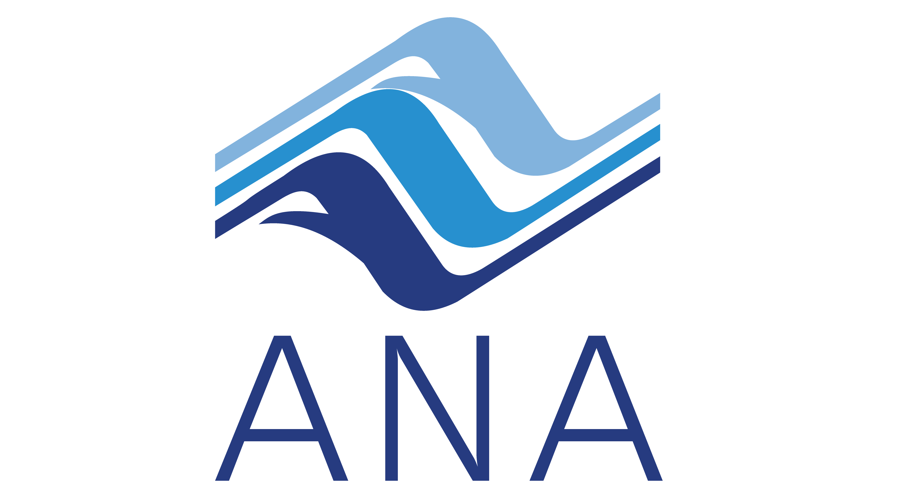
Clientes e instituições onde atuei como consultor de produtos de software, engenheiro de software, gerente de projetos, gerente de negócios, engenheiro de IA e gerente de processos e requisitos.
Trajetória em consultoria, entregas de tecnologia, parcerias institucionais e academia. Os papéis variam por atuação; iniciativas de pesquisa e projetos são identificados separadamente.
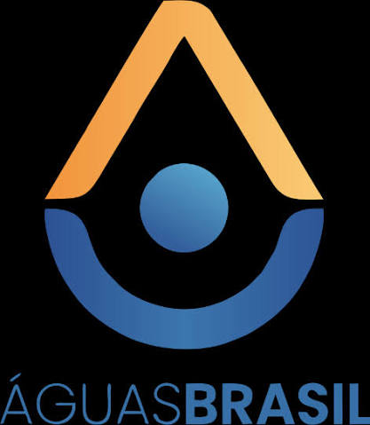
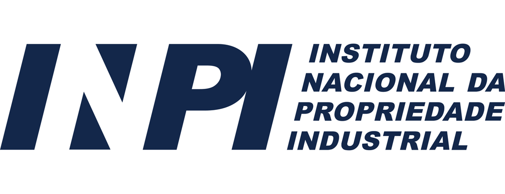
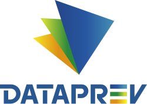
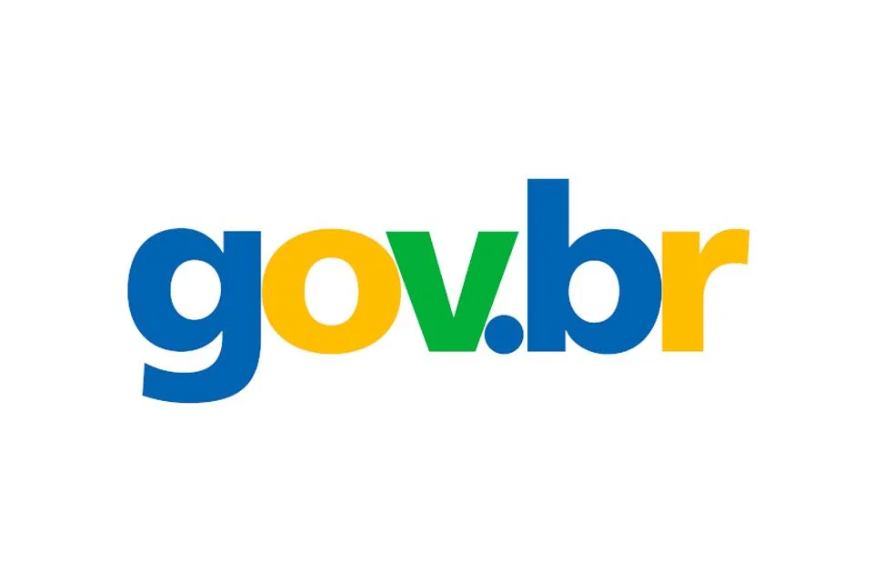
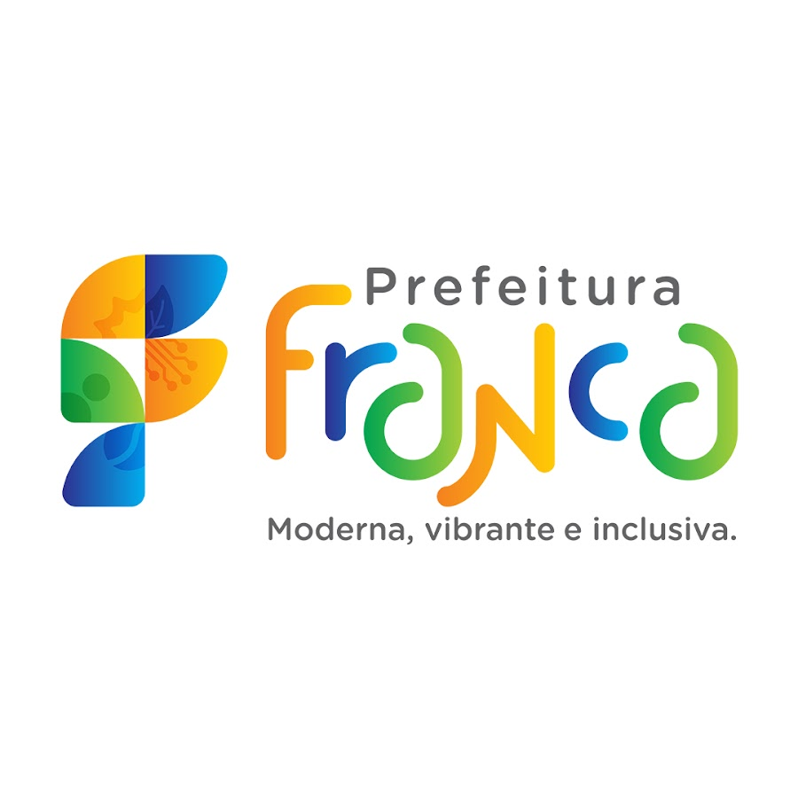

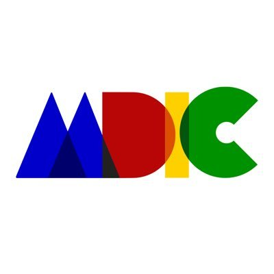
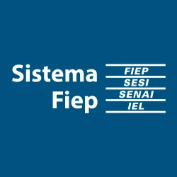
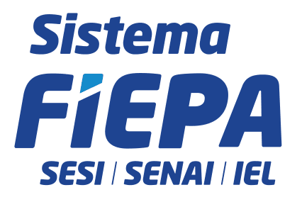
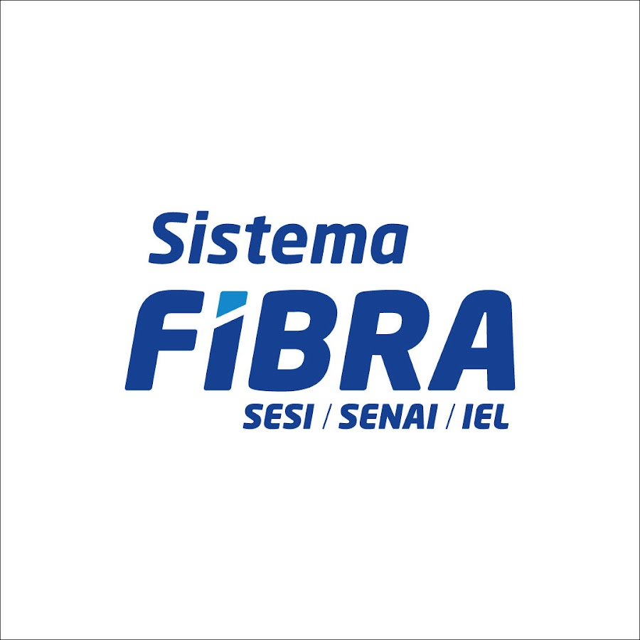
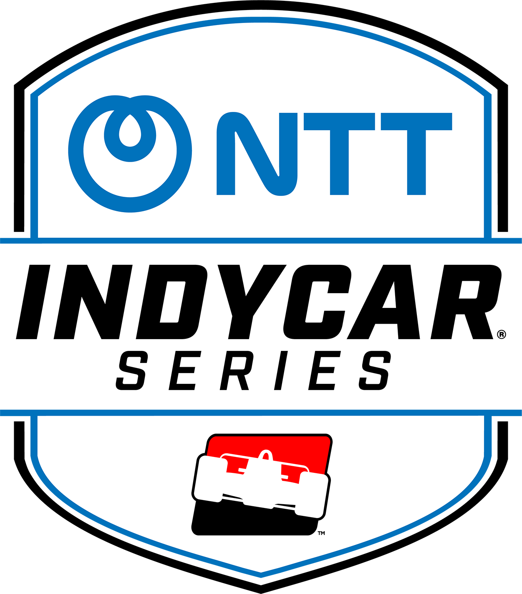
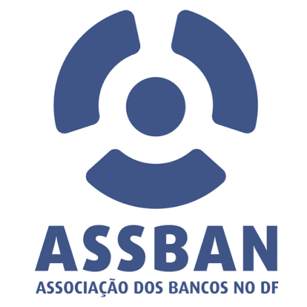
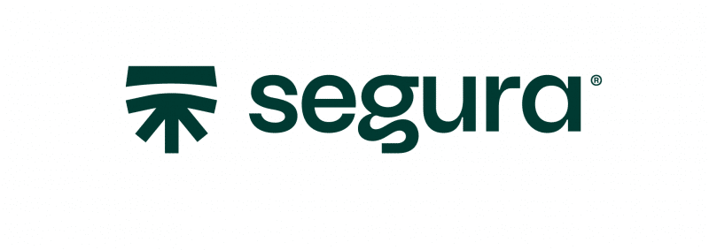

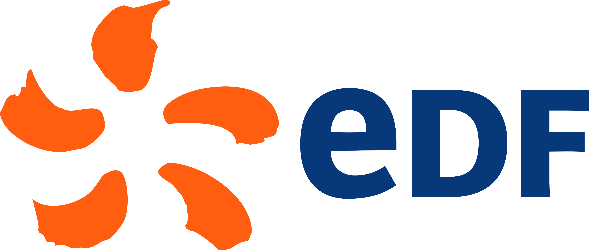
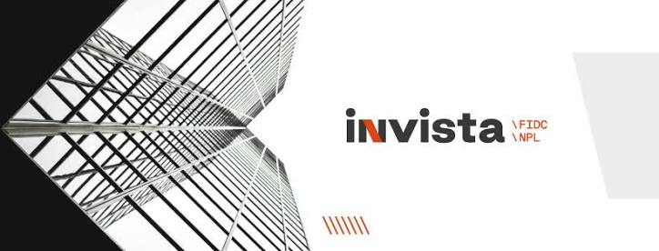
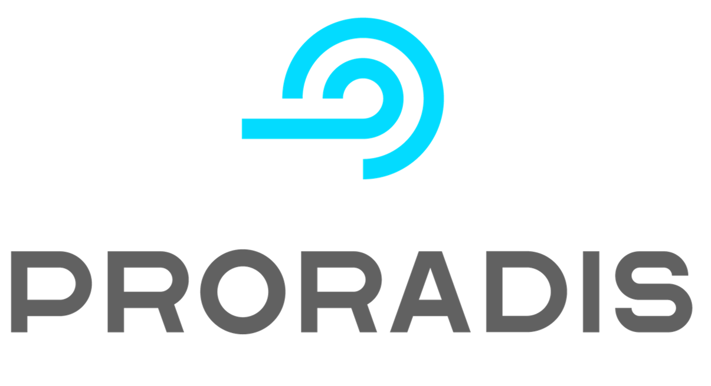
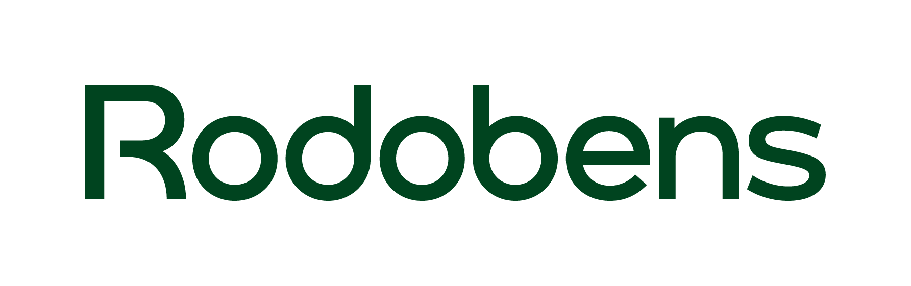
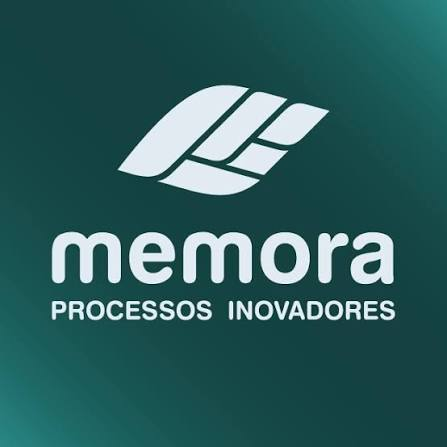
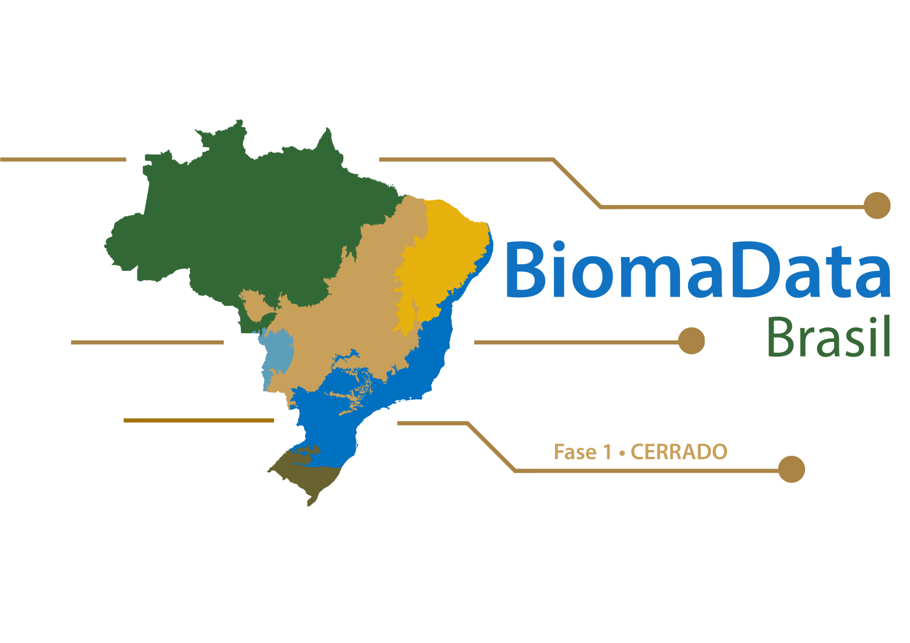
Nomes e experiências informados pelo autor. As marcas pertencem às respectivas organizações e não indicam endosso. Quando a identidade visual não foi confirmada, o nome foi mantido sem uma logo substituta.
Public experiments, educational projects and research code organized as a technical knowledge base.
An applied investigation into generative AI, source-code understanding and software documentation in an industry context.
A learning game designed to make pointers and dynamic memory in C easier to understand.
Research artifacts exploring models and methods for optimizing Python source code.
Practical material and experiments for statistical analysis and data exploration with R.
Experimentos reproduzíveis em inteligência artificial, planejamento espacial e sistemas de dados, inspirados nos setores em que atuei.
8 projetos
 01
01
Planejamento de expansão de redes com orçamento limitado.
Contexto de inspiraçãoANA · Águas Brasil · BiomaData
 02
02
Classificação visual e avaliação sob perturbações adversariais.
Contexto de inspiraçãoGrupo CCR · Detran-DF
 03
03
Geração adversarial de layouts com validação geométrica.
Contexto de inspiraçãoMarcopolo
 04
04
Ingestão assíncrona, qualidade dos dados e processamento em lote.
Contexto de inspiraçãoMarcopolo · SPData · AWS
 05
05
Jogo abstrato entre agentes de ataque e defesa.
Contexto de inspiraçãoSenhaSegura · Protege
 06
06
Recuperação de documentos com evidências e relações entre ativos.
Contexto de inspiraçãoANA · BiomaData
 07
07
Alocação de turmas em salas com restrições de capacidade.
Contexto de inspiraçãoKeduka · Caeduca
 08
08
Caminho mínimo em grade com implementações Python e Rust.
Contexto de inspiraçãoSaneamento · Indústria
MVPs independentes de pesquisa com dados sintéticos. Os nomes contextualizam a experiência do autor; não indicam implantação ou endosso dessas organizações.
A dedicated library for books, book chapters, academic papers, essays and technical publications.
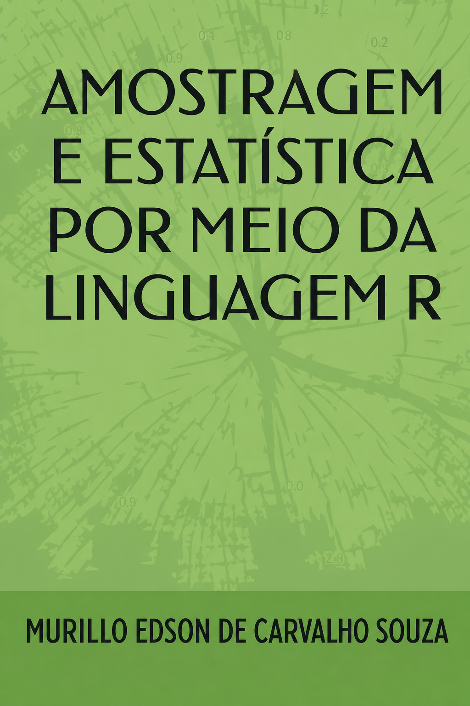
A practical book on sampling and statistical analysis with the R programming language.
View on Amazon ↗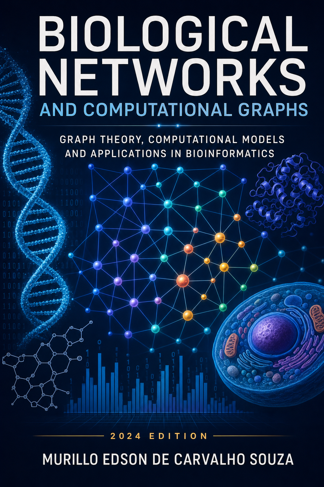
Graph theory, computational biology and artificial intelligence applied to complex biological systems.
View academic record ↗Artificial intelligence, multimodal biometrics, digital identity and advanced authentication.
Read on Zenodo ↗AI, cryptographic methods, data protection and trust in digital documents.
Read on Zenodo ↗Machine Learning for Genetic Data · Intelligent Systems for Omics Data: Integration, Modeling, and Inference · Computational Analysis of Genetic Data: From Data Engineering to Biomarker Discovery · The Role of AI in Drug Discovery · Ethics in Artificial Intelligence in Healthcare · The Future of Personalized Medicine · Integration with Public Databases · Data Cleaning in Biological Data
Technology becomes more meaningful when it moves between disciplines.
Biomedicine, nutrition, human performance and data-informed health.
Generative AI, large language models and human-centered intelligent systems.
C, Python, Java, R, compilers, algorithms and software architecture.
Governance, products, transformation and innovation for public value.
I am Murillo Edson de Carvalho Souza, a federal public servant at Brazil’s National Water and Basic Sanitation Agency (ANA) and a professor of Computer Science, Software Engineering and Artificial Intelligence.
My work encompasses software engineering, project and product management, artificial intelligence and digital transformation.